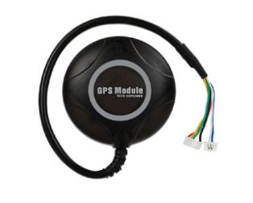

What is GPS?
GPS (Global Positioning System) provides the drone’s position, altitude, and speed
using signals from satellites orbiting the Earth.
How GPS Works
The GPS module receives signals from multiple satellites.
By measuring the time taken for signals to reach the receiver,
it calculates the drone’s position using trilateration.
Key Parameters
- Satellite count: More satellites = better accuracy
- Update rate: Typically 5–10 Hz
- Accuracy: Usually within 1–3 meters
- Integrated compass: Provides heading information
Typical Use Cases
- Mapping drones
- Delivery UAVs
- Autonomous waypoint missions
- Return-to-home functionality
Selection Tips
- Choose GPS with integrated compass for better navigation
- Use external GPS for large drones to reduce interference
- Ensure clear sky view for best performance
Common Mistakes
- Mounting GPS near power wires or ESCs
- Flying before GPS lock
- Ignoring compass calibration